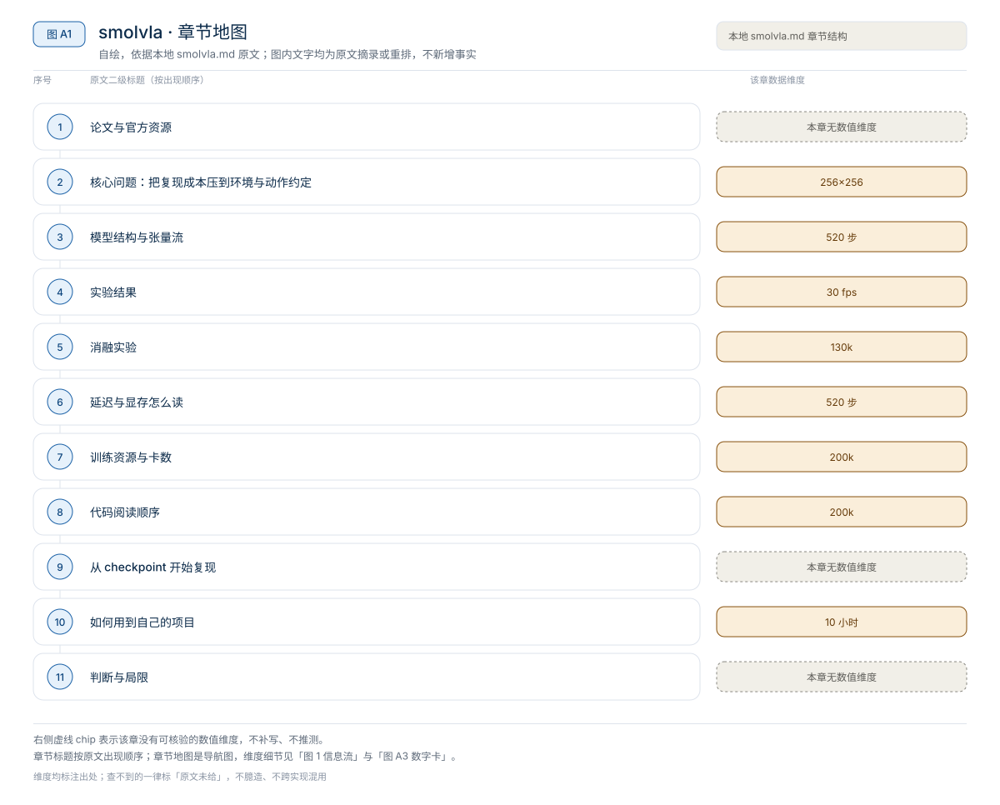
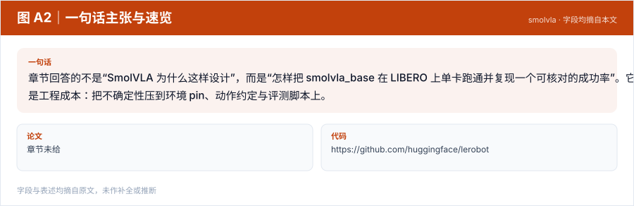
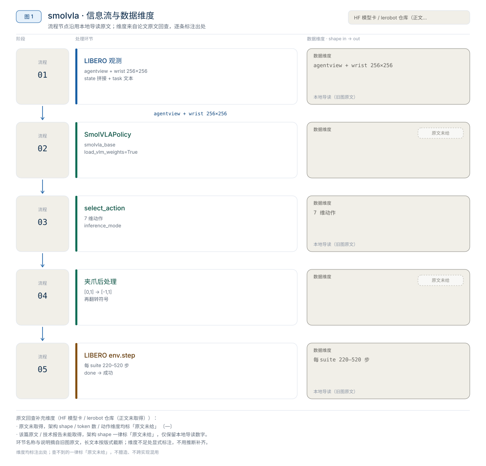
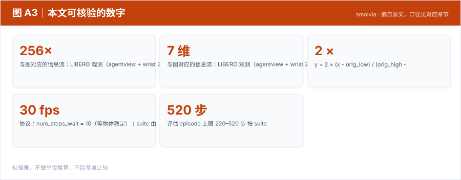
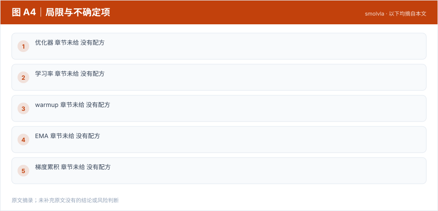

【VLA 精读 · 轻量化部署】DM0.5：把 VLA 在线执行链路逐段压成低延迟服务
DM0.5 重新分配的是“模型语义”和“执行形状”的边界——模型结构保持 Gemma3 VLM + Action Expert + Flow Matching，但把在线执行拆成 prefix 一次编码、suffix 反复采样，再用 TensorRT、FlexAttention、FP8、Triton fused kernels 和 CUDA Graph 压缩固定形状的计算与调度。【章节】
轻量化部署
原题与资源：章节未给 · 代码
一句话：章节回答的不是“SmolVLA 为什么这样设计”，而是“怎样把 smolvla_base 在 LIBERO 上单卡跑通并复现一个可核对的成功率”。它重新分配的是工程成本：把不确定性压到环境 pin、动作约定与评测脚本上。
阅读成本：正文约 8849 字 / 10 个章节 / 5 张图；目录按本文原有章节顺序排列，章节内容未改动。
目录（点击跳到对应章节）：

图 A1：本文章节地图（节点即原文 h2 标题）。自绘，依据本文，不新增事实。
SmolVLA 的本地章节不是论文解读，而是一份单卡复现日志：用 lerobot/smolvla_base、LeRobot commit d602e816、LIBERO 与一份 500 episode 的评测，记录总成功率 0.71（356/500）；训练侧是 RTX 3090、batch 64、200k steps、约 10 小时，并给出“170 steps 约 5 分钟”的续训片段。章节没有给论文版本、参数量、backbone、action chunk 或消融，因此本文把“结构”写成“接口契约”，把“实验”写成“评测协议 + 单次日志”。
来源约定：本文事实只取自本仓库 SmolVLA 导读（下称“本章程”），没有用模型记忆补写论文细节。
标记约定：章节记录＝章节给出的命令、日志与截图；章节代码＝章节给出的评估脚本；章节未给＝本地章节没有该信息。
版本：论文题目、arXiv 编号与论文版本章节未给；代码 commitd602e816；评估日志 2025-08-07；续训记录 2026-01-24；查阅日期 2026-11-01。
| 资源 | 入口 | 阅读用途 |
|---|---|---|
| 论文 | 章节未给 | 本地章节没有给论文题目、arXiv 或版本日期 |
| 源码 | huggingface/lerobot | 章节命令；必须 checkout d602e816 |
| 权重 | lerobot/smolvla_base | 章节下载入口 |
| 项目页 | 章节未给 | 本地章节没有给项目页 |
| 数据集 | nikriz/aopoli-lv-libero_combined_no_noops_lerobot_v21 | 章节命令；建议 git lfs clone |
评测环境是 Lifelong-Robot-Learning/LIBERO；评估脚本来自 lerobot issue #1316 中 @zlw21gxy 的版本，章节做了日志改动。
论文题目：章节未给；arXiv：章节未给；版本：章节未给；代码 commit：d602e816；查阅日期 2026-11-01。
版本提示： 章节同时出现两个 conda 环境名（创建 smolvla、激活 smolvla_new）；评估日志日期（2025-08-07）与续训记录（2026-01-24）不同。0.71 只对应 2025-08-07 的那次日志，不要与后续 checkpoint 的结果混在一张表里。

图 A2：一句话主张与速览字段。自绘，依据本文，不新增事实。
一句话：章节回答的不是“SmolVLA 为什么这样设计”，而是“怎样把 smolvla_base 在 LIBERO 上单卡跑通并复现一个可核对的成功率”。它重新分配的是工程成本：把不确定性压到环境 pin、动作约定与评测脚本上。

图 1：SmolVLA × LIBERO 的观测、动作与评测闭环。自绘，依据本地导读；不是论文原图。
与图对应的信息流：LIBERO 观测（agentview + wrist 256×256、拼接 state、task 文本）→ SmolVLAPolicy.select_action → 7 维动作 → 夹爪 [0,1] → [-1,+1] 与符号翻转 → env.step → 成功判定/日志；每 episode 先 policy.reset()，闭环继续。
对比主流路径：从零训练一个 VLA → 加载 smolvla_base 的 VLM 权重再微调（--policy.load_vlm_weights True）。章节没有给对照实验，这句话只描述命令，不是消融结论。
smolvla_base 的权重。smolvla_base 的 VLM 权重（load_vlm_weights=True）与 LIBERO 的 7 维动作接口。torch.load 补丁、对齐夹爪符号与图像翻转；这些都不在模型里。来源：本章程“环境配置”“训练”“评估脚本”三节。

图 A3：本文可核验的数字摘录。自绘，依据本文，不新增事实。
一个具体任务走一遍 · 本文形状与接口速查（以下均摘自原文，未作推算）：
章节没有展开模型内部；能确认的是 SmolVLAPolicy 这个入口与它接受的 observation 字典。以下“结构”全部是接口契约，不是论文架构。
| 键 | 内容 | 预处理 | 来源 |
|---|---|---|---|
observation.images.image | agentview RGB | [::-1, ::-1] 旋转 180°、/255、CHW、加 batch | 章节代码 |
observation.images.wrist_image | wrist RGB | 同上 | 章节代码 |
observation.state | eef_pos + quat2axisangle(eef_quat) + gripper_qpos | float32、加 batch | 章节代码 |
task | 任务语言 | 字符串，来自 task.language | 章节代码 |
章节没有给 observation.state 拼接后的维数；读代码时用 state.shape 确认，不要按常见定义猜。图像分辨率由 LIBERO_ENV_RESOLUTION = 256 决定，章节注释说这是“训练数据使用的渲染分辨率”。
| 项 | 章节值 | 说明 |
|---|---|---|
| 动作维度 | 7 | LIBERO_DUMMY_ACTION = [0.0] * 6 + [-1.0] |
| 夹爪原始范围 | [0, 1] | 数据集 wrapper 把夹爪标准化到 [0,1] |
| 夹爪目标范围 | [-1, +1] | 环境侧约定 |
| 二值化 | 可选 sign | 评估脚本用 binarize=False |
| 符号翻转 | 必须 | 章节注释：RLDS 对齐后 0=close, 1=open；环境里 -1=open, +1=close |
| 执行顺序 | 先 normalize，再 invert | 章节代码顺序 |
夹爪归一化公式（章节代码注释给出）：
y = 2 × (x - orig_low) / (orig_high - orig_low) - 1其中 orig_low = 0.0、orig_high = 1.0。评估脚本先 normalize_gripper_action(action, binarize=False)，再 invert_gripper_action(action)；顺序反了会把开合语义弄反。
SmolVLAPolicy.from_pretrained(policy_path) → .to("cuda") → .eval()；每个 episode 先 policy.reset()，再在 torch.inference_mode() 里调 select_action(observation)。章节代码没有展开 select_action 内部的动作队列或 chunk 逻辑；读代码时从 lerobot/policies/smolvla/modeling_smolvla.py 入手。
预处理里最容易漏的是图像旋转 180°：章节用 IMPORTANT: rotate 180 degrees to match train preprocessing 标注。漏掉它，策略看到的画面与训练分布不一致，成功率会无声下降。
来源：本章程评估脚本与 _get_libero_env。
| suite | max_steps | 章节注释：最长训练 demo |
|---|---|---|
libero_spatial | 220 | 193 |
libero_object | 280 | 254 |
libero_goal | 300 | 270 |
libero_10 | 520 | 505 |
libero_90 | 400 | 373 |
| 自定义 fallback | 520 | 章节未给 |
协议：num_steps_wait = 10（等物体稳定）；suite 由 --task_suite_name 选择；num_trials_per_task 在完整脚本默认 1、task1 脚本默认 10；seed 默认 7；每 episode 调 policy.reset()；成功由 env.step 返回的 done 判定；视频按 30 fps 保存。
| 指标 | 值 | 口径 |
|---|---|---|
| 总成功率 | 0.71 | 2025-08-07 日志 |
| episodes | 500 | 同一日志 |
| successes | 356 | 同一日志 |
| suite | 章节未给 | 脚本默认 libero_spatial，日志未确认 |
| 每任务 trials | 章节未给 | 脚本默认值不等于日志口径 |
| checkpoint | 章节未给 | 脚本列出 130k / 140k / 200k / 200170 / 200340 |
| seed | 章节代码默认 7 | 日志未确认 |
读法：0.71 是章节作者在本地环境的一次评测日志，不是论文报告的多 seed 均值；没有 suite、trials、checkpoint 与标准差，不能与其他 LIBERO 数字横比。500 episodes 与“任务数 × trials”的对应关系章节没有给，不要反推。
章节说其他人报告 60k 步以上“还不错”，作者提前停止以测试评估脚本；续训从 200000 → 200170 → 200340，170 steps 约 5 分钟。这些是训练过程记录，不是收敛曲线；章节没有给 loss 或分 checkpoint 的成功率。
来源：本章程“训练”“结果”两节。
章节没有消融表。它给的是可对照的开关，但没有对照结果：
--policy.load_vlm_weights True/False：章节只用 True，没有 False 的结果。读者该不该复用：load_vlm_weights=True 是章节唯一验证过的设置；把它当“预训练更好”的消融结论是不成立的。checkpoint 选择也只能当工程经验，不能当收敛结论。
来源：本章程“训练”“结果”两节。
| 项目 | 章节数值 | 口径 |
|---|---|---|
| 训练吞吐 | 170 steps ≈ 5 min | 续训片段；章节未说明 batch/卡数 |
| 训练时长 | 约 10 h | RTX 3090 |
| 推理延迟 | 章节未给 | — |
| 推理显存 | 章节未给 | — |
| 评估 episode 上限 | 220–520 步 | 按 suite |
| 视频帧率 | 30 fps | 只用于写视频 |
测量协议：章节没有给推理热身、重复次数、中位数、输入是否已在 GPU，也没有说是否包含图像预处理与 env.step。
区分：170 steps / 5 min 是训练吞吐，不是策略延迟；1000 / 延迟 不能由它换算。章节也没有给控制频率，不能把 7 维动作换算成执行频率。
口径冲突：若按 170 steps ≈ 5 min 线性外推，200k steps 约 98 小时；章节同时说“训练 10 小时左右”。两者不能同时成立，除非 batch、硬件或统计口径不同；章节没有解释，本文不替它选一个。若按 10 小时反推，约 2 万步。两个数都只能当章节原话，不能当性能结论。
显存：章节未给，不要用权重体积推算。
来源：本章程“训练”段与评估脚本。
| 训练项目 | 章节值 | 备注 |
|---|---|---|
| 硬件 | RTX 3090 | 章节明说 |
batch_size | 64 | CLI |
steps | 200000 | CLI；续训到 200170 / 200340 |
| 优化器 | 章节未给 | 没有配方 |
| 学习率 | 章节未给 | 没有配方 |
| warmup | 章节未给 | 没有配方 |
| EMA | 章节未给 | 没有配方 |
| 梯度累积 | 章节未给 | 没有配方 |
| GPU 数 | 章节未给 | CUDA_VISIBLE_DEVICES="0"；章节说该变量用于解决多 GPU 训练问题 |
save_freq | 10000 | 章节建议调高 |
wandb.enable | True | CLI |
policy.push_to_hub | False | CLI |
policy.type | 本地 smolvla_base | CLI |
| 数据集 | nikriz/aopoli-lv-libero... | CLI |
有效 batch：章节只给 batch_size=64，没有给卡数与累积；若按单卡、无累积，有效 batch = 64。这是条件式推断，不是章节配方。
三级复现：
来源：本章程“训练”段。
| 顺序 | 路径 / 模块 | 阅读重点 |
|---|---|---|
| 1 | lerobot/policies/smolvla/modeling_smolvla.py | SmolVLAPolicy：from_pretrained / reset / select_action |
| 2 | lerobot/scripts/train.py | CLI、resume、save_freq、wandb |
| 3 | pip install -e ".[smolvla]" | smolvla 依赖组 |
| 4 | LIBERO/libero/libero/benchmark/__init__.py 第 164 行 | torch.load(..., weights_only=False) |
| 5 | eval_LIBERO.py 的 observation 字典 | 键名、180° 翻转、/255、CHW |
| 6 | _get_libero_env | BDDL 路径、256 分辨率、seed |
| 7 | normalize_gripper_action / invert_gripper_action | [0,1] → [-1,1] 与符号 |
坑：
git checkout d602e816；章节原话是“必须要这个版本，后续版本可能会报错”。smolvla，激活 smolvla_new；照抄会找不到环境。_pickle.UnpicklingError: Weights only load failed。num_trials_per_task 两个脚本默认值不同（1 vs 10）；比较成功率前先确认 trials。policy.reset() 不要省；章节代码每次都调。save_freq=10000 在 200k steps 下只留少量 checkpoint；章节建议调高。以下命令来自章节，未在本机验证；路径用占位符，按自己的目录替换。章节把两条 git clone 写在同一 cwd，这里改成同级克隆，便于后续 cd ../LIBERO。
git clone https://github.com/huggingface/lerobot
git clone https://github.com/Lifelong-Robot-Learning/LIBERO
cd lerobot && git stash && git checkout d602e816
micromamba create -n smolvla python=3.10 -c conda-forge --yes
mamba activate smolvla_new # 章节原文如此；创建名是 smolvla
pip install torch==2.7.1+cu121 torchvision==0.22.1+cu121 torchaudio==2.7.1+cu121 \
-f https://mirror.sjtu.edu.cn/pytorch-wheels/cu121/
cd lerobot && pip install -e ".[smolvla]"
cd ../LIBERO && pip install -e . && pip install robosuite==1.4.0 bddl easydict gym matplotlib
export TOKENIZERS_PARALLELISM=falseexport DATA_ROOT=/path/to/data
python3 download_hf_files.py nikriz/aopoli-lv-libero_combined_no_noops_lerobot_v21 main \
--repo-type dataset --download_path "$DATA_ROOT/aopoli-lv-libero"
# 把 LIBERO/libero/libero/benchmark/__init__.py 第 164 行改成：
# init_states = torch.load(init_states_path, weights_only=False)export MODEL_ROOT=/path/to/models OUTPUT_ROOT=/path/to/outputs
python -m lerobot.scripts.train \
--policy.type="$MODEL_ROOT/smolvla_base" --policy.load_vlm_weights True \
--dataset.repo_id="$DATA_ROOT/aopoli-lv-libero" \
--batch_size=64 --steps=200000 --save_freq 10000 \
--output_dir="$OUTPUT_ROOT/libero_smolvla_scratch" \
--job_name=libero_smolvla_scratch_ckk --wandb.enable=true --policy.push_to_hub=Falsepython eval_LIBERO.py --policy_path="$OUTPUT_ROOT/libero_smolvla_scratch/checkpoints/200000/pretrained_model/"这里假设已把章节给的评估脚本保存为 eval_LIBERO.py。章节还给了 eval_LIBERO-task1.py 与 eval_LIBERO-task1-libero10.py 两个变体；先跑单任务确认动作符号，再跑全 suite。
可复用的是单卡微调配方、LIBERO 评测壳与动作约定，不是章节没有展开的模型架构。
/255、夹爪变换搬到自己的仿真；先跑一个 suite 的单任务；代价是环境接口与成功判定要自己对齐。load_vlm_weights=True、batch 64、先小步数验证吞吐，再按显存调 batch；测 loss、保存与恢复；代价是要先量本机吞吐，不能照抄 10 小时。[0,1]/[-1,1]、符号、二值化写成单元测试；先在 task1 上验证开合方向；代价是要有可复现的初始状态与视频。相关章节：RT-1、RT-X、OpenVLA、SmolVLA 导读。
本文判断：可复用的是单卡微调配方、LIBERO 评测壳与动作约定，不是章节没有展开的模型架构。
局限与不确定项（以下均摘自本文，未作推断）：

图 A4：局限与不确定项摘录。自绘，依据本文，不新增事实。
覆盖范围：本页新增的导读、目录、章节地图、数字卡与局限清单，均为原文信息的重排或摘录；正文、数据与实验结论未改动。